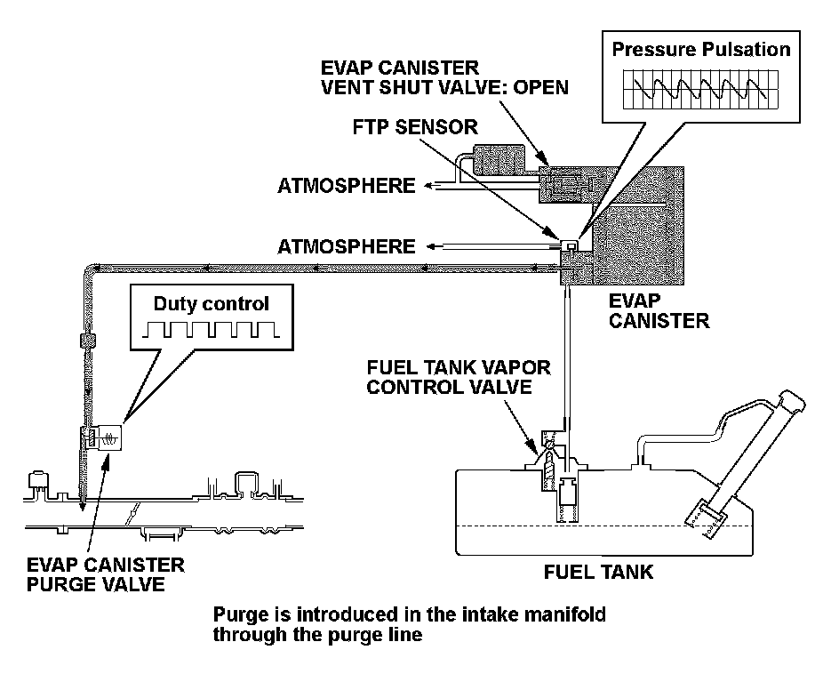
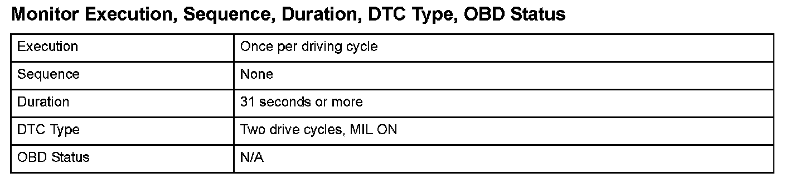
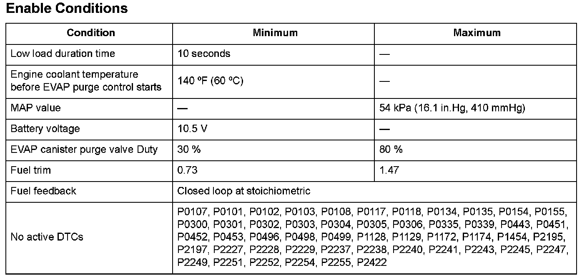

Advanced Diagnostics
DTC P145C: Evaporative Emission (EVAP) System Purge Flow Malfunction
General Description
The fuel (vapor) vaporized in the fuel tank is stored in the canister temporarily and introduced in the engine through the evaporative emission (EVAP) canister purge valve. The powertrain control module (PCM) controls the amount of vapor introduced into the engine by repeatedly switching power to the EVAP canister purge valve at a constant frequency according to the condition of the engine.
[STEP1]
The EVAP canister purge valve opens normally (EVAP canister purge valve OPEN OK) and detects that the purge flow is normal when the pulse of the EVAP canister purge valve drive cycle is transmitted to the fuel tank pressure (FTP) sensor by the purge flow (pulse method).
OK determination: Pulse exists (P145C OK)
- P0497 Purge flow OK
- P0496 EVAP canister purge valve stuck Open OK
NG determination: No pulse (P145C NG)
- Either purge flow P0497 abnormality or P0496 EVAP canister purge valve OPEN failure.
- In this case, classify the failure part according to [STEP 2].
[STEP 2]
If there is no pulse, it is determined as either no purge flow or the EVAP canister purge valve is stuck OPEN:
When the FTP sensor fluctuates from negative pressure to atmospheric pressure after the ignition is turned off: P0496 EVAP canister purge valve stuck OPEN
When there is no fluctuation of the FTP sensor: P0497 purge flow NG

Monitor Execution, Sequence, Duration, DTC Type, OBD Status

Enable Conditions
Malfunction Threshold
The pulses detected by the fuel tank pressure sensor are 0.01 % or less for at least 31 seconds.
Confirmation Procedure with the HDS
Do the EVAP FUNCTION TEST in the INSPECTION MENU with the HDS.
Driving Pattern
1. Start the engine. Hold the engine speed at 3,000 rpm without load (in Park or neutral) until the radiator fan comes on.
2. Let the engine idle for at least 77 seconds.
3. Turn off the ignition for at least 10 seconds.
Diagnosis Details
Conditions for illuminating the MIL
When a malfunction is detected during the first drive cycle, a Temporary DTC is stored in the PCM memory. If the malfunction recurs during the next (second) drive cycle, the MIL comes on and the DTC and the freeze frame data are stored.
Conditions for clearing the MIL
The MIL will be cleared if the malfunction does not recur during three consecutive trips in which the diagnostic runs.
The MIL, the DTC, the Temporary DTC, and the freeze frame data can be cleared by using the scan tool Clear command or by disconnecting the battery.